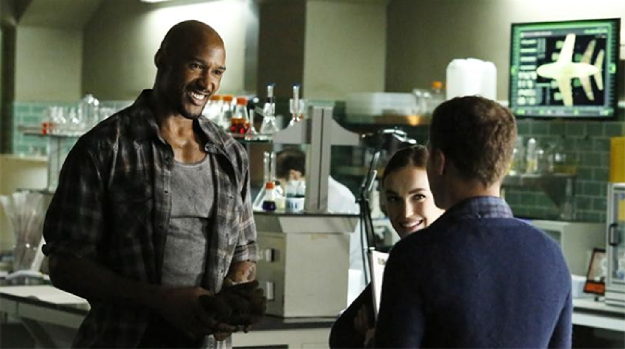
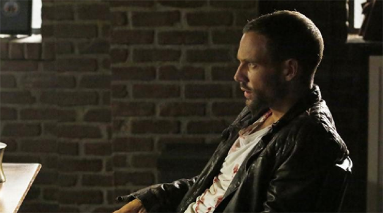

ENTERTAINMENT >> TV
Agents of S.H.I.E.L.D. "Heavy Is the Head" (An Episode Review)
by Kaitlin Thomas
In its first season, Marvel's Agents of S.H.I.E.L.D. relied heavily on a procedural format with overarching larger thematic storylines, like the ones concerning the Clairvoyant and Coulson's mysterious return from the dead. But once Hydra was unmasked as the Big Bad and Ward's betrayal was revealed in "Turn, Turn, Turn," the series mostly swapped the one-and-done thing for more heavily serialized drama, and it looks like that might be the new normal. The procedural format works well for many shows, and in theory S.H.I.E.L.D. could have been a procedural, but I think it's pretty ob- vious by now that the show is much more successful when it en- gages in long-form storytelling. We're two episodes deep in Season 2, and "Heavy Is the Head" picked up exactly where "Shadows" left off, and because of that, the momentum from the premiere car- ried over.
This week, Absorbing Man was still on the loose with the mysteri- ous Obelisk. May was hot on his trail, Hunter was scooped up by Talbot and his men, Skye was anxious to get back out into the field to assist May, Fitz was still struggling to prove that he's not a worthless member of the team, and Coulson was trying to be a fearless leader in the face of everything that went wrong. Ward was M.I.A., but I think that's to be expected since he's currently imprisoned in the Playground's basement. Because the show isn't currently doing stories-of-the-week, it's not that easy to incorpo- rate him, and that's perfectly fine. He'll make a good asset when the team needs information on Hydra, and he'll definitely continue to factor into Skye's arc, but I think S.H.I.E.L.D. is right to keep him out of sight for a bit. Trying to find ways to shoehorn him in every week would ring false and make him seem more useful than he actually is, as if the show and its characters couldn't exist without him. But I think the team is doing just fine now that Ward is locked up—well, as fine as can be after everything went wrong in "Shad- ows." And part of the reason for that is S.H.I.E.L.D.'s decision to essentially replace Ward with Tripp and newcomers Lance Hunter (Nick Blood) and Mack (Henry Simmons).
We didn't get to spend much time with Hunter and Mack last week, but "Heavy Is the Head" more than made up for that. Mack took an interest in Fitz, which eventually led to him modifying a gadget that Fitz had previously designed in order to destabilize the molecules in Creel's skin, thus allowing Coulson to turn him fully to stone. I was initially very upset last week when the rest of the team seemed to have written Fitz off as a lost cause, but as the "Heavy Is the Head" progressed, it became clear that they simply weren't the right people to fix him. They knew him back when he was one half of S.H.I.E.L.D.'s Dynamic (Science) Duo, but Mack has only ever known the current version of Fitz, which means there's no risk of Fitz not living up to his potential. It's easy to imagine a scenario in which May, Skye, Simmons, or Coulson would find it difficult to reconcile this new version with the old one, and thus get frustrated when things didn't work out. But with Mack, that problem doesn't exist. No, FitzMack doesn't roll off the tongue the way FitzSimmons does, and he's certainly no replacement for the real thing, but it's nice that Fitz has someone to talk to so he's not always mumbling to himself or blabbering at Head Simmons.
On the Hunter front, we learned that he's a sensitive but dou- ble-crossing jerk who looks at S.H.I.E.L.D. as a job rather than a lifestyle (which is how Skye has come to view it). After Talbot snatched him, he negotiated his own deal in exchange for giving up Coulson, and in addition to his hefty price tag, he also insisted that Lucy Lawless receive a proper burial, one that didn't tarnish her name since S.H.I.E.L.D. is considered a terrorist organization. It was a telling moment, and it only added to my growing interest in Hunter. I like that he's predictably unpredictable, and I think he's a good man for the team to have around. He's a free-thinker, and even if he's always looking out for number one, he's got an exciting energy about him.
Which brings us to Coulson. Part of what made Coulson such a popular character in the Marvel films was his genial—if strict—na- ture, and his earnest desire to do the right thing. But back then, Coulson didn't have to deal with the big picture; he was a company man and a true fanboy, but he took orders from Nick Fury. Now he's trying to strike the perfect balance between "team leader" and "organization leader," and he hasn't gotten there yet. Even though his ranks are outnumbered by your local Boy Scout troop, it'd be ridiculously unbelievable if Coulson just slipped into Fury's shoes with ease. As director, Fury made a lot of tough calls, and I don't think you can really say he's a good man the way you can with Coulson. But Coulson is operating on a much larger scale now, and he can't afford to be as single-minded. I think Coulson is a good leader on the small scale, but whether or not he's cut out for lead- ing S.H.I.E.L.D. as a whole still remains to be seen.
What did you think of “Heavy Is The Head”?
Good Stuff
IT WAS OKAY
ARROW FTW